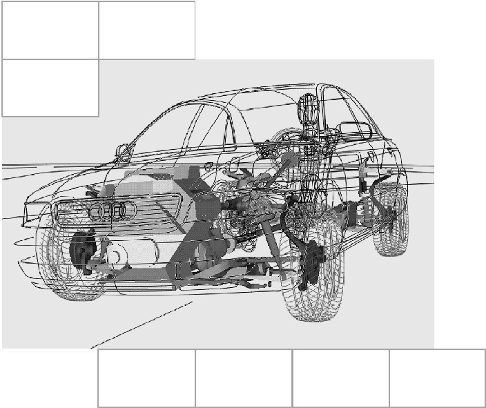

[redacted-person]
[redacted]
[redacted-phone]
[redacted-phone]
[redacted-person] / OE
Hausruf [redacted-phone]
Telefax [redacted]
[redacted-co]

D[redacted]Funktionslastenheft
Integrität und Absicherung sicherheitsrelevanter Funktionen LAH.DUM.880.FR
Verteiler
|
[redacted-person] |
|
Abstimmung
|
[redacted-person] |
|
Änderungsdokumentation
|
|
|
|---|---|---|
| [redacted-person] |
|
[redacted-person] |
| [redacted-person] |
|
[redacted-person] |
| [redacted-person] |
|
[redacted-person] |
Inhaltsverzeichnis
Kurzbeschreibung des Entwicklungsumfanges 5Allgemeines 5Integrität 6[redacted-person] 6Verkleidungsteile 6Sonstige 6Beauftragungsumfang 6Komponententests 6Absicherung sicherheitsrelevanter Funktionen 7Beauftragungsumfang 7[redacted-person] und Funktionen 7[redacted-person] 7Dokumentation und Datenaustausch 8[redacted-person] 9Lastenhefte zur Info 9[redacted-person] / Normen 9
[redacted-person] wie z.[redacted-person] und Seitenverkleidungen werden im Seitencrash großen Belastungen und Verformungen ausgesetzt. Bruch oder Beschädigung einzelner Teile kann zur Gefährdung des Insassen beziehungsweise zum Ausfall oder Fehlverhalten von sicherheitsrelevanten Funktionen führen. [redacted-person] sollen auf Basis von Gesamtfahrzeugsimulationen, Komponenten- und Crashversuchen die Belastung der betroffenen Komponenten analysiert werden, Maßnahmen zur Vermeidung von Bauteilversagen beziehungsweise Funktionsausfällen oder Fehlverhalten erarbeitet und projektspezifische Ersatzlastfälle entwickelt werden.
[redacted-person] und Funktion sind in allen Seitencrash-Lastfällen aus
LAH.DUM.880.LF [redacted-person] 3 [redacted-person] Seitencrash
sicherzustellen. Zusätzlich ist – falls nicht Projektstand – der Lastfall FMVSS214 Pfahl 75° SID2s als Worst-Case-Lastfall zu betrachten.
Weiterhin sind für die Untersuchungen folgende Parametervariationen durchzuführen, um ein robustes Bauteilverhalten sicherzustellen:
|
|
|---|---|
|
|
|
|
| [redacted-person] |
|
| [redacted-person] |
|
| [redacted-person] |
|
Tabelle 1: [redacted-person]
Falls es seitens der [redacted]mit [redacted-person] und deren Verbindungstechnik gibt, so sind die unten aufgeführten Untersuchungen zusätzlich auch mit diesen Versagensmodellen durchzuführen.
Die bereits in den Gesamtfahrzeugmodellen enthaltenen Komponenten sind
LAH.DUM.880.H [redacted]
zu entnehmen. [redacted-person] ist aus Sicht des Umfangs dieser Beauftragung zu bewerten und, falls erforderlich, zu optimieren. [redacted-person] sind an das Gesamtfahrzeugmodell zurückzumelden. Nicht vorhandene und benötigte Komponenten sind zu modellieren.
[redacted-person] gilt für Serien- sowie Mehrausstattungen gleichermaßen.
Grundsätzlich sind alle im Seitencrash belasteten Komponenten zu betrachten. Strukturbauteile (Karosserie, Türen, Klappen) sowie Bauteile außerhalb des Fahrzeuginnenraums sind nicht Gegenstand dieses Lastenhefts.
[redacted-person] müssen mindestens betrachtet werden (jeweils für Fahrer und Beifahrerseite), sofern diese im Fahrzeug vorhanden und Projektstand sind:
Türverkleidungen 1. Sitzreihe
Türverkleidung 2. Sitzreihe bzw. Seitenverkleidung 2. Sitzreihe
Seitenverkleidung 3. Sitzreihe
A-/B-/C- und D-Säulenverkleidungen, sofern im Bereich des Insassen
Dachrahmen und Hecklappenverkleidung, sofern im Bereich des Insassen
Mittelkonsole beziehungsweise Mittelarmlehne 1. Sitzreihe
Mittelkonsole beziehungsweise Mittelarmlehne 2. Sitzreihe
Cockpit
Folgende sonstige Komponenten müssen mindestens betrachtet werden (jeweils für Fahrer und Beifahrerseite), sofern diese im Fahrzeug vorhanden und Projektstand sind:
Bauteile in der Mittelkonsole:
[redacted-person]
Steckdosen
[redacted-person]:
Rear-Entertainment
Zu den jeweiligen Konstruktionsständen CAD digKF, CAD digVPT, CAD BST, CAD Serie, P-frei, B-frei und BMG sind möglichst frühzeitig zur Untersuchung der obigen Punkte die entsprechenden Komponenten in der Simulation in allen [redacted-person] zu betrachten und bezüglich Integrität zu analysieren.
[redacted-person] der Analysen sind Simulationen ohne (Standard für normale Gesamtfahrzeugsimulationen) und mit Versagensmodellen in den betroffenen Komponenten (Material, Verbindungstechnik) zu berechnen.
[redacted-person] der Analysen sind Maßnahmen zur Sicherstellung der Integrität auszuarbeiten. [redacted-person] sind mit dem Auftraggeber, der zuständigen Konstruktionsabteilung [redacted-co] und dem Lieferanten der betroffenen Komponenten abzustimmen.
Falls erforderlich sind Substrukturmodelle für Lieferanten zu erzeugen, um diesen in der Entwicklung zu unterstützen.
[redacted-person] der Integrität sind dynamische Komponententests als Ersatzlastfälle zu entwickeln und durchzuführen. Diese sind für alle Komponenten zu entwickeln, deren Integrität kritisch ist. Für
die Türverkleidung vorne muss in jedem Fall ein dynamischer Komponententest durchgeführt werden. Die erforderlichen Fahrzeugkomponenten werden von [redacted-co] zur Verfügung gestellt, evtl. notwendige Sonder- bzw. Versuchsaufbauten sind vom Auftragnehmer zu erstellen.
[redacted-person] sind durch Simulationen zu begleiten und die Versuchsergebnisse zur Validierung der Simulationsmodelle zu verwenden. Die validierten Modelle sind an das Gesamtfahrzeugmodell zurückzumelden.
Zu den [redacted-person], B-Frei und PVS ist auf Basis von Gesamtfahrzeugsimulationen der Standardlastfälle zusammenzufassen und zu analysieren, ob eine kritische Belastung von Steuergeräten oder Verkabelungen besteht, die für die Funktion sicherheitsrelevanter Funktionen im Seitencrash wichtig sind. Basis dafür ist eine Übersicht der dafür relevanten Kabel & Steuergeräte. Diese wird von der [redacted-co]-Fachabteilung zur Verfügung gestellt.
Betroffen sind alle Bauteile, die während oder nach einem Seitencrash eine Funktion zu erfüllen haben beziehungsweise deren Fehlverhalten zu einer Gefährdung des Insassen führen oder dessen Bergung nach Crash erschweren könnte. Dies sind unter anderem folgende Bauteile beziehungsweise Funktionen:
Safetycomputer/Airbagsteuergerät
Türsteuergerät (Auto-Lock der Türen)
E-Call
[redacted-person]
[redacted-person]
Elektrifizierung
[redacted-person]:
[redacted-person]
[redacted-person]
Multikollisionsbremse
Siehe dazu Lastenheft
LAH.DUM.880.FP [redacted-person] Modellierung und Modellierung
Siehe dazu Lastenheft
LAH.DUM.880.FN [redacted-person] Dokumentation und Datenaustausch
[redacted-person] stellt sicher, jeweils mit den aktuellen Unterlagen zu arbeiten.
Es gelten die am Ausgabedatum des Lastenheftes gültigen, mitgeltenden Unterlagen. Abweichungen sind mit der [redacted-co]/GE-Fachabteilung abzustimmen und im Lastenheft zu dokumentieren.
[redacted-person] sind selbständig zu besorgen.
LAH DUM 880 H [redacted-person]
LAH.DUM.880.FP [redacted-person] Modellierung und Prozesse
LAH.DUM.880.FN [redacted-person] Dokumentation und Datenaustausch
[redacted] Entwicklungsbedingungen
[redacted] Fahrzeugzulieferteile allgemein sowie die darin genannten Dokumente.
Bezugsquellen für Normen und Dokumente: [redacted-person] können über die B2B Lieferantenplattform [redacted-co] unter der Internetadresse: http://www.vwgroupsupply.com mit einer Zugangsberechtigung abgerufen werden.